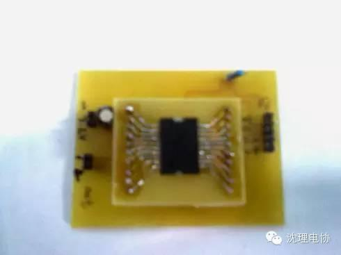
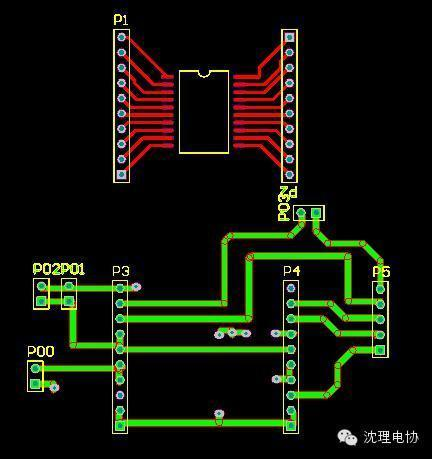
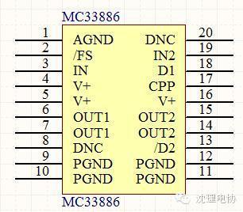
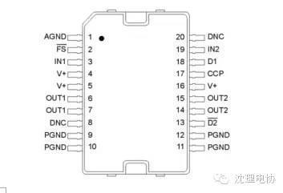
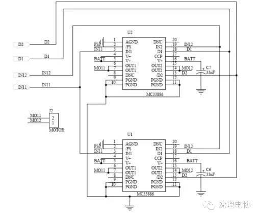
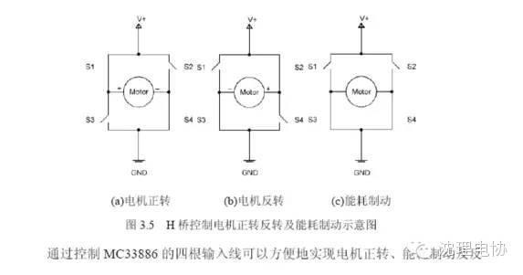
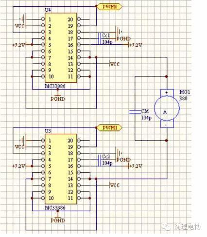

飞思卡尔 MC33886驱动电机芯片演示
视频地址连接：http://v.youku.com/v_show/id_XMjY0NDg1Nzky.html
 
MC33886的实物图。
MC33886的PCB图。

MC33886的原理图。
下面是我在飞思卡尔论坛中找到的一些关于MC33886芯片的一些资料，和大家分享一下。
电机速度控制的不同接法
速度控制原理（包括正反转）：
通过改变电机驱动芯片MC33886所输入的PWM波的占空比，来控制对电机的供电电压的大小，从而控制电机的转动速率。
MC33886芯片的真值表如下：
输入 | 输出 | ||||
D1 | /D2 | IN1 | IN2 | OUT1 | OUT2 |
0 | 1 | 1 | 0 | 1 | 0 |
0 | 1 | 0 | 1 | 0 | 1 |
0 | 1 | 0 | 0 | 0 | 0 |
0 | 1 | 1 | 1 | 1 | 1 |
在设计过程中通过了向IN1,IN2口送出PWM波来控制电机的正转和反转，使用了电机的正转为智能车加速，当转弯的时候利用了反转PWM波来控制电机的减速，在无倍频的情况下，输出方波为5kHz，。
PWMPERXY=
MC33886芯片内含错误报告管/FS，，通过将其接到单片机PT2口来进行错误捕捉。
通过PWM5,PWM7的开启，送数和关断，向IN1和IN2送PWM波，自动控制电机的正反转，通过反转来刹车。 
接法一：单片MC33886－正反转
引自《基于HCS12的小车智能控制系统设计》
2.5
车速控制单元采用RS-380SH型直流电机对小车速度进行闭环控制，并用MC33886电机驱动H-桥芯片作为电机的驱动元件。车速检测元件则采用日本Nemicon公司的E40S-600-3-3型旋转编码器，其精度达到车轮每旋转一周，旋转编码器产生600个脉冲。
系统通过MC9S12DG128输出的PWM信号来控制直流驱动电机。考虑到智能车由直道高速进入弯道时需要急速降速。通过实验证明：当采用MC33886的半桥驱动时，在小车需要减速时只能通过自由停车实现。
当小车速度值由80降至50时(取旋转编码器在一定采样时间内检测到的脉冲数作为系统速度的量纲)，响应时间约为0.3
其电机驱动电路如图7所示。VCC为电源电压7.2
接法二：双片MC33886
引自《西安理工技术报告》
3.2
3.2.1
直流电机驱动采用飞思卡尔公司的5A
芯片内置了控制逻辑、电荷泵、门驱动电路以及低导通电阻的MOSFET
路，适合用来控制感性直流负载，可以提供连续的5A
护、过热保护、欠压保护。
 
接制动。图3.5
流正向流过电机，车模前进；S2、S3
适当利用这个过程可以使车模处于反接制动的状态，迅速降低车速；当S3、S4
导通且S1、S2
于电机轴在外力作用下旋转时，电机可以产生电能，此时可以把直流电动机看
作一个带了很重负载的发电机，电机上会产生一个阻碍输出轴运动的力，这个
力的大小与负荷的大小成正比，此时电机处于能耗制动状态。
本设计中使用两片MC33886
另一方面减小MC33886
接法三：单片两个半桥并联－无反转制动
《上海交通大学报告》
驱动芯片MC33886
内部集成有两个半桥驱动电路，本设计中，因为只需控制小车前进的速度不需要控制运行电机反转，因此不需要采用全桥驱动运行电机。而为了增大电流驱
动能力，我们将两个半桥并联使用。
接法四：双片两个半桥并联－可正反转制动
为了能使小车在过弯道的时候能够快速地把速度减下来，我们的驱动电机部分使用了由两块MC33886

以下是我用51单片机调试时使用的C语言程序。程序来源于网络。
将P1^0和P1^1输出的PWM接与IN1，IN2。通过按键P1^3，P1^4调节占空比的大小，控制芯片电压输出的大小从而改变电机的转速。
#include <REG52.H>
#define uchar unsigned char
#define V_TH0
#define V_TL0
#define V_TMOD 0X01
void init_sys(void);
void Delay5Ms(void);
sbit in1=P1^1;
sbit in2=P1^0;
sbit chu1=P1^3;
sbit chu2=P1^4;
unsigned char ZKB1,ZKB2;
void main (void)
{
init_sys();
}
void init_sys(void)
{
}
//延时
void Delay5Ms(void)
{
unsigned int TempCyc = 1000;
while(TempCyc--);
}
void timer0(void) interrupt 1 using 2
{
static uchar click=0;
TH0=V_TH0;
TL0=V_TL0;
++click;
if (click>=100) click=0;
if (click<=ZKB1)
else
if (click<=ZKB2)
else
}

====电子协会=====
关注“沈理电协”微信公众平台，了解更多资讯！


信息部/吴心成